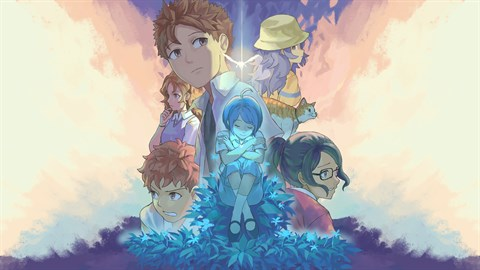

Hi! I’m Chris Shia, a current undergraduate at Yale University studying Computing and the Arts, a joint major between Computer Science and visual art. I’m passionate about all things design, specifically with a focus on various aspects of game/interaction design (such as gameplay, narrative, or graphic design). You can find some of my work on this website from my class, club, and hobby projects! I always try to blend interaction with storytelling and put a magical twist on the mundane, and I love anything with a touch of the fantastical. Some of my favorite games, like Unpacking and Coffee Talk, play with how the player interacts with the world and limiting them to specific means. Through design, I hope to create more experiences that allow the player/user to be immersed in virtual worlds.

Sea of Stars
Shadow of the Colossus

A Space for the Unbound